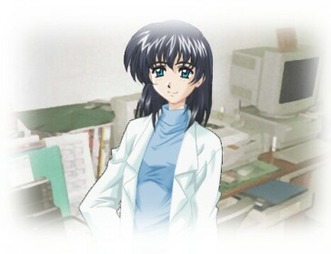

ＣＤ版製作日誌
2001.12.01
|  |
※以下の内容は、追加シナリオのネタバレを含むのでご注意ください。
追加シナリオのトゥルーＥＤを見てから、読むようにしましょう。
Chapter 00
シェア版製作に当たって：
（※以下のテキストは、ＣＤ版からそのまま引き継いだものです）
「時の故郷」は、元々ＣＤ－ＲＯＭ専用ソフトとして開発する予定だったゲームでした。
ＣＤ－Ｒを入手してからというもの、ＣＤでゲームを作ることによるメリット（容量の制限がほぼ皆無、動画コンテンツの配信が可能等）を生かしたものを作りたい－と思っていました。
しかし当然ながら、インターネットの世界で「有料のソフト」を普及させるのはきわめて不利です。多くの人にプレイしてもらいたいと思ったら、やはりフリーソフトとして公開するほうが有利に決まっています。ですから、
・良いソフトを作りたい→
・それには、容量の足かせを取り除く必要がある→
・ＣＤ版にするには、どうしても有料になる→
・しかし有料では多くの人にプレイしてもらえない→
・やっぱりフリーにするしかないか？→
・でも容量の制限が…
というジレンマに陥ってしまったわけです。
フリーソフト作家であればやはり、「無料でも最高の品質のものを作る」というプライドがありますから、ある程度のところで踏ん切りをつけて、容量の面で妥協することになります（妥協せずに作って、総容量が３０ＭＢ超ってな怪物ソフトもありますけど、それはそれでＤＬしてもらえないという致命傷になりえます）。
私ももちろん、フリーソフト版「時の故郷」を作成することにより、ある程度の要素を削ってゲームを完成させました。しかしそれは、あくまで元々作りたかったものの一部に過ぎません。
フリーソフトとは、利益にとらわれず自分の作りたいものが自由に作れることに、その意義があるはずです。そのはずが、容量の制限によって自分の作りたいものが作れないとすれば、本末転倒になってしまいます。
そこで、「時の故郷」のＣＤ版製作という決断に踏み切ったわけです。
Chapter 01
果たして売れるのか？：
この疑問点については、今こうしてＣＤを手にしておられる方にはひたすら感謝です。
フリーソフトとしてまず公開し、さらに有料版を配布するからには、それなりのセールスポイントが必要です。さもなくば、お金を払ってまでプレイする必要はありませんからね。実際のところ、かなりのプレイヤーがそう感じたのかもしれません。もちろん、今この文章を読んでおられるあなたは、そうでなかった立派な方ですね。
フリーソフトと有料版を分けて発表する－というのは、シェアウェアでよくある形態なわけですが、そうした場合の「違い」には次のような点が考えられます。
（１）試用期間の制限がなくなる（試用期間が１ヶ月とか）
（２）使える機能が増える
（３）マップが増える（ＳＬＧやレースゲーム等ですね）
（４）物語の途中まで（全３章のうち１章とか）→最後まで遊べる
（５）エンディングが増える（マルチＥＤのゲームで、無料版では１つしか見れない）
（６）１８禁化
…よいこの私としましては（６）を却下いたしますと、だいたいこれら５つくらいでしょうか。
JavaScriptのゲームとしては、（１）みたいな制限は作れませんので無理ですし、（３）はジャンルが違うので捨てるとすると、残るのは２，４，５ですね。
しかし良心的な私は、自ら選択肢を減らしてしまったのです。物語は完全に最後まで見られるうえ、エンディングも１２種類完備した状態にしてしまいました。しかも「時の故郷」Ver1.20より、「音楽モード」と「ＣＧモード」を投入してしまったため、（２）の手も使えません。
果たしてどうやって、ＣＤ版をフリーソフト版と差別化させたらいいのか？
悩みました。生半可な要素では、フリーソフト版をＤＬすれば十分という人を動かすことはできません。製作時のビットマップ画像を大量に詰め込むという方法はありますが、「そんなのフリー版の画像で十分だ」と言われたら撃沈ですからね。「容量にものを言わせた物量作戦」では、ＣＤ版にした意味がありませんし……
最初の段階で打ち出した方針は、以下の要素でした。
（１）画像の高画質化……これは当然。
（２）Flashムービーの高画質化、ステレオ化……これも当然。
（３）画像の追加……没った画像を追加。
（４）基本シナリオに分岐を追加……さらに攻略性が増し、面倒になるので却下。
（５）デスクトップアクセサリー……壁紙収録ならＯＫか？
（６）FlashによるＢＧＭ……これは最初からシステムに組み込まれていたので実施。
（７）フルボイス化……流行りだが、スタッフが必要なので却下。
（８）おまけシナリオ……ちょっとしたショートシナリオの分岐ならいけるか？
（９）旧ＤＯＳ版の収録……やりませう。
（10）設定資料集……テキスト書くだけなら任せて
果たして、どれを目玉にすればいいのか……
そう考えてゆくと、おのずと結論は出てきたのです。
Chapter 02
新たなセールスポイント
時の故郷ＣＤ版の「セールスポイント」となる、最大の目玉はどれなのか？
その疑問は、消去法によって導かれていきました。
（３）を売りにするのはギャルゲーの常套手段ではありますが、たかだかJpeg画像数枚のためにお金を払えってのもアコギな気がしますし（せいぜい200KB前後でしょうに…）。１・２・５・６にしたって、「今の画質で十分」ってな人にはそれほど意味のないことです。
こうして、「本編をプレイした人がさらに楽しめる」内容にするためには、「本編を知っている人が、さらに物語の奥まで踏み込むこと」に意味がある内容でなければなりません。そうなると、自然と答えは「おまけシナリオ」へと向かっていきます。
普通おまけシナリオといえば、本編の舞台を使った外伝的なお話になるものです。本編のキャラクターたちが繰り広げる漫才とか、人物だけそのままで舞台を変えてみるとか、他の漫画のパロディをやるとか、まあそういったところでしょうか。
しかし言ってみれば、それらの要素は「無くても良い」程度の内容といえます。そういった部分こそ、フリーソフトで公開すべきであり、本編はタダなのにおまけが有料…ってのも変ですよね。
（この時点で、企画段階で考えていた「学園編シナリオ」は見事にボツりました）
そこで思いついたのが、全く新しい「追加シナリオ」という形だったのです。
「時の故郷」のマルチエンディング１２種類は、すべてハッピーエンドの１点へ向かって収束する物語です。しかし見方を変えれば、ハッピーエンド（成功）以外の１１種類はみな、その途中で挫折した「失敗」でしかないことになります。
そういう意味では、「マルチエンド」というには自由度の低い分岐かもしれません。本当の意味でマルチエンドにするには、全く異なった物語が展開され、全く異なった「成功」や「失敗」の形があるべきじゃないでしょうか。
そこで今回、「追加シナリオ」という形で、全く異なった物語の型を提供することにしたわけです。
主人公とゆり子はそのままに、全く新しい舞台を与え、さらに新ヒロインを投入する。主人公とヒロインの関係だけがクローズアップされた本編に対し、世界観の側から物語を補完する役割を与え、本編をプレイした人に新鮮な驚きを感じてもらえるようにする。いや、本編をプレイしているからこそ楽しめるものとする。
これが、今回のＣＤ版－つまりは追加シナリオの設計コンセプトです。本編のおまけというより一歩踏み込んで、物語の続きを追うための新作ゲームと呼ぶことさえできるかもしれません（実際、このくらいのボリュームで発表されている同人ソフトも結構あると思いますが）。
これにて、ＣＤ版の設計コンセプトは決定されました。
しかしそれが決まったのが、発売から約１ヶ月前というていたらく。
Chapter 03
新ヒロインの設定
上のセールスポイントを決定する前から、新ヒロインを出そうというアイデアはありました。
（もともと一人しかいなかったのが珍しいんですが……）
普通、ギャルゲーならヒロインを複数出すことにより、より多くの顧客層を狙うわけですが、「時の故郷」はあいにくそういうゲームではありません（…でもギャルゲーか？）。それに、顧客層を刺激することを狙ってヒロインを投入するのでは、元々のコンセプト（ゲームのあとがきを参照）に反します。
よって「新ヒロインが登場する必要性」がどうしてもなければなりません。
そこで考えたのが、「新ヒロイン＝追加シナリオ＝本編と一対になる」という構図です。
追加シナリオのウエイトが非常に大きく、本編の後のおまけ以上のボリュームを持つものである以上、その内容も登場するヒロインも、本編と対応したものでなければなりません。
そこで、次のようなシンメトリーな関係を考えてみたわけです。
| 本編 | 追加シナリオ |
| 季節 | 夏 | 冬 |
| 舞台 | 田舎 | 都会 |
| テーマ | 恋 | 愛 |
| イメージ | 昼（太陽） | 夜（月） |
| ヒロイン | ゆり子
（陽・癒し系・イヌ系） | 謎の少女
（陰・無表情系・ネコ系） |
| 物語 | 人物主体 | 世界観主体 |
こうして並べてみると、思いっきり対照的ですね。
同じゲームとは思えません。
しかし言ってみれば、全く対になる要素を追加することによって、本編に無かったものを補完することになるわけです。こうして、本編と追加シナリオは陰／陽が一体となり、物語を完全なものにするのです。
こうした思考を経て、新ヒロイン「謎の少女」は誕生しました。
丸みを帯びたデザインのゆり子とは対照的に、シャープさを感じさせる少女のデザイン。いわゆる綾波系と呼ばれるやつですね。それはそれで、別の系統のお客様のニーズを満たすかと。
だいたいこういう場合、イメージが先行してビジュアルを先に完成させる私ですが、案の定描いてる自分が大ハマリしてしまい、自分で描いてるキャラに惚れ込んでしまうのでした。
うおおおお、○○○～～！！！（ネタばれ防止のため伏字）
Chapter 04
地獄の作業量
新ヒロインも物語のコンセプトも決定し、ようやく軌道に乗り始めたＣＤ版ですが。
ここで、とんでもない壁にぶち当たりました。
難しい話ではありません。
ただひたすら、単純に、仕事量がバカみたいに膨れ上がっていたのです。
・追加シナリオのシナリオフローの作成
・エンディングの決定
・背景画像、キャラクタ画像の作成
・ＢＧＭ・効果音の選定
・新作ＣＧの書き下ろし
・追加シナリオの執筆
・エンディング字幕の作成
・スタッフロール（追加シナリオ版）の作成
・おまけコーナーの変更
・ＣＧコーナーの変更
・音楽コーナーの変更
・システムのフラグ管理の変更
とまあ、追加シナリオ関係だけでもこれだけの作業量です。
あと、マニュアル作成やパッケージ、インストーラの準備のことを考えると背筋が凍ります。
さらに本編にも、手を加えるべきところは加えておかなければなりません。
「……死ぬる」
それが正直な結論でした。
結局、発売時期は１２月へ繰り越し。まぁ、本編が夏の７月に発表したことを考えれば、ＣＤ版を冬の１２月に出すのもぴったりなのかもしれませんね。＞とかごまかしてみる
こうなったら仕方がない。一日刻みでスケジュールを立て、作業項目を書き出して完全に整理し、一日分の予定より常に先行するように行動する。仕事場で鍛えた修羅場モードを発動させ、この１ヶ月強を乗り切ろう！！
…で、今日の作業は？
……
（スケジュールを見て悶死）
Chapter 05
完成へ向かって
ただでさえ死にそうなスケジュールなのに、切羽詰まってくるとアイデアが出るわ出るわ。
ＣＧを増やすことは時間的にもはや無理としても、システムを追加したり手を加えたりする場所は次々と出てきます。その例を幾つか挙げてみると、
・ネタバレＢＢＳの設置
・基本シナリオの加筆修正
・テキスト読み返し機能の追加
・メッセージスキップの高速化
・それに伴うヘルプファイルの変更
・右クリック機能の追加（ＩＥのみ）
・タイトル画面のいたずら
などがあります。
特に、プログラムに手を加えるからには、ＩＥとＮＮの両方に対応しなければなりません。なにせＮＮ4.75はバグだらけな上に、スタイルシートに致命的な欠陥があるため、異様なほど無駄な努力を求められる作業になります。もう今回、これでNetscapeには見切りをつけましたんで、NN6にはもう対応しません。
それでも何とか乗り切れたのは、ひとえにキャラクターへの愛情に他なりません。追加シナリオをクリアした後の「おまけ」コーナーなんて、偏った愛が入りまくってます。必見ですよ。
さて。
それから完成までは、語るべきこともなく愚痴を言うひまもなく。
ウイルス騒ぎがあったり、途中で作曲の仕事を頼まれるわ、おがわゆきとさんの「月を狩るもの」の音楽とサウンドをつける仕事を引き受けてしまうわ、人間の限界に挑むハードワークが続きました。
あるときは、夜の３時までかかって線画を描いて。
またあるときは、朝の６時に起きて色を塗って。
さらに、デバッグしながら居眠りしそうになり、倒れ込んで寝て早朝に続きをやってたり。
Chapter 06
そして、物語は幕を下ろす
こうして、このＣＤ－ＲＯＭ「時の故郷」は完成しました。
皆さんのお手元に届いている頃には、私はこの世とあの世の境を反復横飛びしていることでしょう。
…もう二度とやらんぞ、
こんな無茶なスケジュール…
期日を予告して作品を作るってことが、こんなに苦しいとは。
次はもっと３ヶ月くらい余裕をとって……と今では思うわけですが、時間があればあったで余計に要素を詰め込んでしまい、さらに困難なものにチャレンジしてしまうんだろうなぁ。
何はともあれ、これにて「時の故郷」の物語もおしまいです。
ええかげん死にそうなんでこのへんで寝ます。